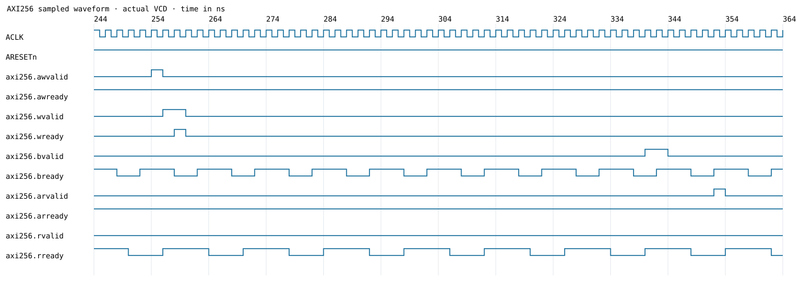

先输入 AXI ID，再点击一条握手记录，下表会显示承载该消息的 Flit 在两端的发送和接收。最后点击 Flit 查看全部原始字节。 数据按页加载，每页最多100条；Flit按方向和序号排列。请将HTML与旁边的数据目录一起保留。 时间来自统一的 1fs 仿真时间轴。seq 是链路序号，不是 AXI ID；一个 Flit 可承载多条消息，一条消息也可跨 Flit。
完整 VCD · GTKWave 信号列表 · SoC 端原始日志 · 存储端原始日志 · 收发配对与延迟 · 离线核对结果
| 通道 | ID | AXI握手(ns) | 地址 | 消息 / RP | 方向 / seq范围 | 发送(ns) | 交付(ns) |
|---|
| 时间(ns) | 端点 | 方向 | 事件 | seq | attempt | 重放 | 结果 | 字节 |
|---|
TX_FDI：链路接受250B协议内容；TX_FRAME：256B帧开始序列化；RX_FRAME：接收侧检查物理帧；RX_FDI：通过检查后向对端FIFO交付250B内容。CRC错误与重复帧不会重复交付。
原始字节按偏移0开始排列；红色表示 RX_FRAME 与对应发送尝试的字节差异。256B 帧含2B帧头、10B分散协议头、240B消息区与两个CRC16；250B日志已经移除物理帧头及CRC。

预览只显示首段有效活动窗口；完整地址、数据、WSTRB、LAST及全部周期请用GTKWave打开VCD，加载axi_view.gtkw。 应在上升沿用沿前的VALID/READY判定握手。波形时间戳处的稳定值通常是该沿之后更新的值。